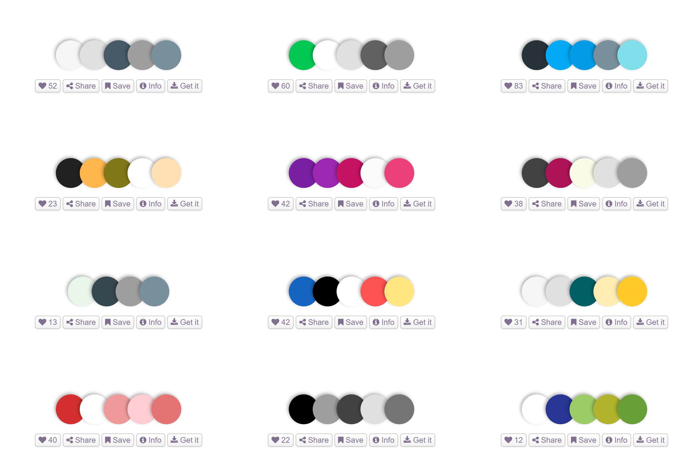
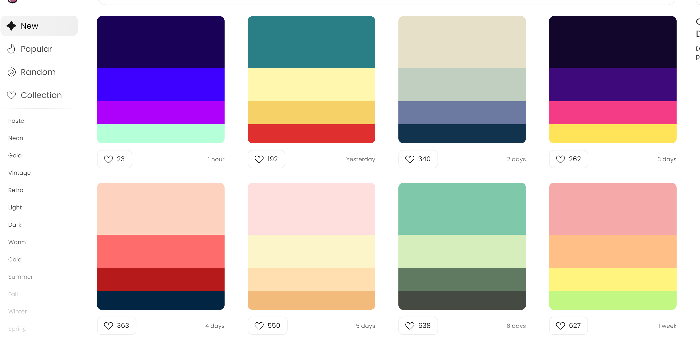
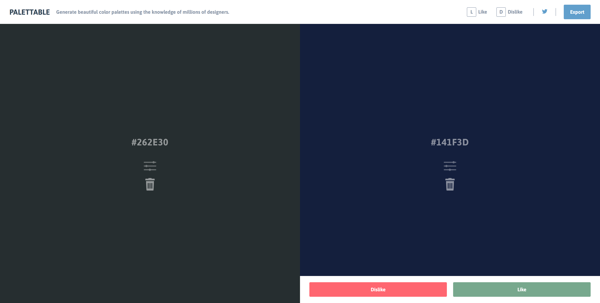
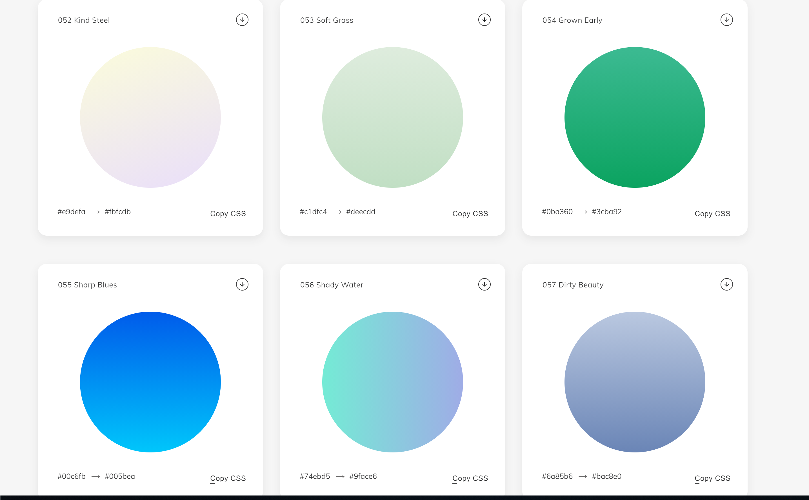
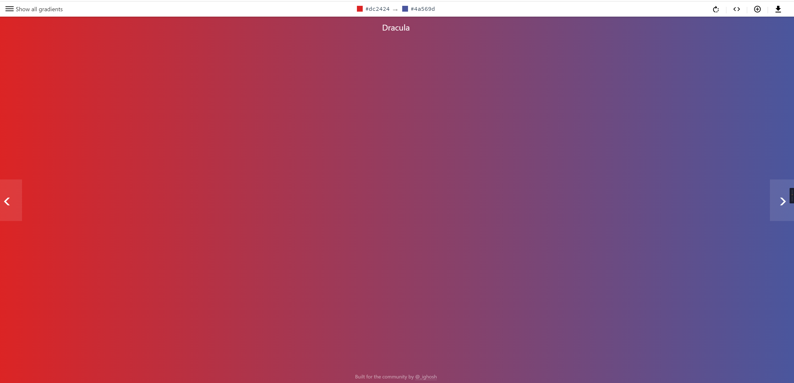
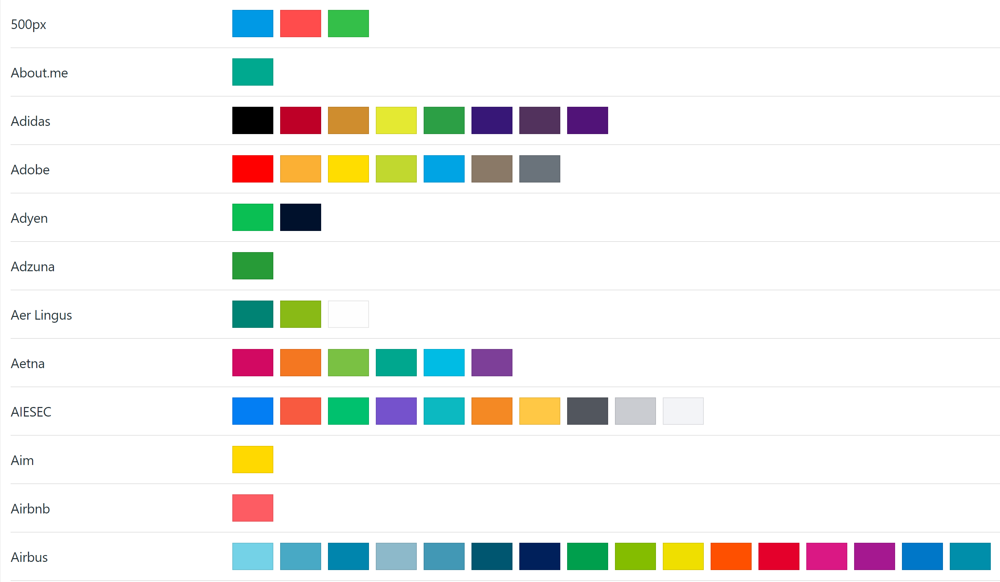

来源：酷安评论
分享一些配色网站
转载自公众号：平面课程表，下面是原链接
查看链接
文字我都放在这里了，有些加载会比较慢，需要 xx
（给出的图片是在最后一个网站随便找的，挺好看)
1. 中国色
据说该网站收藏了最全的中国色，颜色皆以色卡的形式来呈现，并且还有中英文互译，可以说是十分贴心了。
网址：查看链接
2.Nipponcolors
日式传统配色该网站收藏了日本传统色彩，也是以色卡的形式来呈现，它最棒的地方是背景可以根据你所选择的颜色来变化。
网址：查看链接
3.Colorion MaterialColorion Material
网站不仅分享了几百个色板，并且还有收藏夹的功能，方便用户收藏。

4.LOL ColorsLOL Colors
是一款非常可爱的配色网站，鼠标移动到不同颜色的水滴上会有色彩代码 (Hex Code) 的颜色值。
网址：查看链接
5.Color HuntColor Hunt
不仅会实时更新不同配色方案，用户还能在该网站分享自己的色彩搭配，优质的配色方案往往会获得大量的点赞。

6.Material PaletteMaterial Palette
主要特色是可以让用户一边选择颜色同时还能实时预览效果图，并且用户只需要选择 1 个或 2 个颜色后系统会自己匹配出一组 APP UI 配色方案。

7.Palettable
在进入网页时，会随机推荐颜色，你只需要选择喜欢 or 不喜欢，直到搭配出想要的色板。
网址：www.palettable.io/

8.colorfavscolorfavs它可以根据你上传的图片来分析配色，自动检测色值。
网址：www.colorfavs.com/
9.colrdcolrd
不仅可以保存自己喜欢的配色，也可以自己上传图片和配色方案。
网址：查看链接
10.COLOURlovers
该网站除了提供了眼花缭乱的页面色彩搭配方案外，还把 DIY 的原理运用其中，让那些精彩的配色不会随着时间的流逝而被遗忘。用户也可以按照自定的格式上传配色方案与大家分享。
网址：查看链接
11.WebGradientsWebGradients
网站收录了 180 种渐变色彩，整体风格比较柔和。 点击下方图示渐变色后进入全屏预览，直接可复制CSS代码。
网址：查看链接

12.ColourcoColourco
网站会根据你鼠标的移动来变换颜色。
网址：查看链接
13.Color Claim“ColorClaim”
是由德国的一位设计师创办的配色站点，该网站展示的都是博主收集的最喜欢的颜色组合，目前已经收录了 102 种组合。
网址：查看链接
14.Adobe Color CCAdobe Color CC
不仅有着超全的配色方案，还能根据色轮来调整配色。
网址：color.adobe.com/
15.UigradientsUigradients
收藏了将近上百种渐变配色方案，以分享美丽渐变色彩为主的分享站，里面接近上百种渐变配色方案，设计师可根据自己风格来选择搭配。
网址：查看链接

16.0 to 255
你随机点击一个颜色，它会有序呈现色彩变化的颜色列表，这时你可以选取合适的使用。
网址：查看链接
17.BrandColorsBrandColors
收集了世界上许多知名品牌的配色表，可以直接让我们参考一个品牌的配色，我们也可以在该网站上下载任何一个品牌的配色表。
网址：查看链接

18.Design SeedsDesign Seeds 是一个色彩与灵感的网站，主要从自然和有意义的生活美学中寻找创作元素。
网址：查看链接